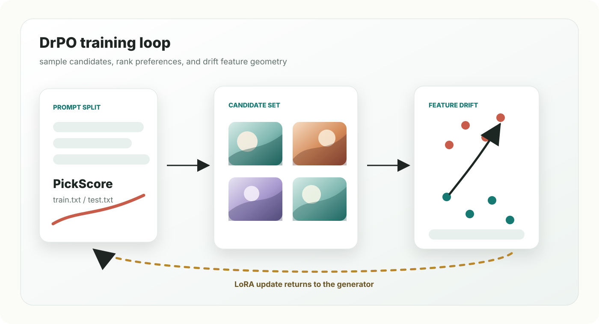

Generate candidates
For each prompt, the one-step generator samples a candidate set from random latent seeds.
One-step text-to-image diffusion
Preference optimization for fast text-to-image generators using reward-guided candidate selection and feature-space drifting.

One-step diffusion models provide fast text-to-image generation, but direct preference optimization can be unstable when rewards are sparse or noisy. DrPO trains lightweight LoRA adapters by repeatedly generating candidate images, selecting preferred and dispreferred samples with a reward model, and optimizing feature-level drifting objectives. The released code includes SDXL-Turbo DrPO trainers, SD-Turbo comparison baselines, PickScore prompt splits, and sampling and evaluation utilities.
For each prompt, the one-step generator samples a candidate set from random latent seeds.
A frozen reward model ranks candidates and forms positive and negative groups.
DrPO shifts trainable model features toward preferred samples and keeps the update anchored to the reference generator.
SDXL-Turbo DrPO with MAE and teacher U-Net feature backends.
Compact SD-Turbo implementations of Draft, DPO, GRPO, SPO, and VGGFlow.
PickScore training and test prompt splits under data/pickscore/.
Sampling scripts and reward-based metric utilities for generated manifests.
The default scripts use local model weights under models/
and prompts from data/pickscore/train.txt.
bash scripts/train/sdxl_turbo_drpo_teacher.sh
bash scripts/train/sdxl_turbo_drpo_mae.sh
bash scripts/train/sdxl_turbo_draft.shbash scripts/train/draft.sh
bash scripts/train/dpo.sh
bash scripts/train/grpo.sh
bash scripts/train/spo.sh
bash scripts/train/vggflow.sh